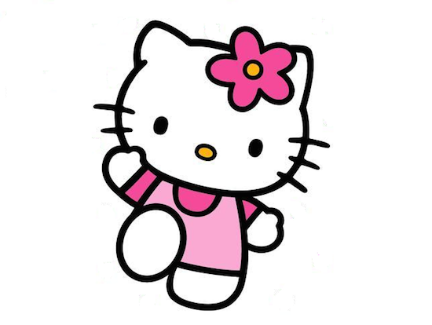
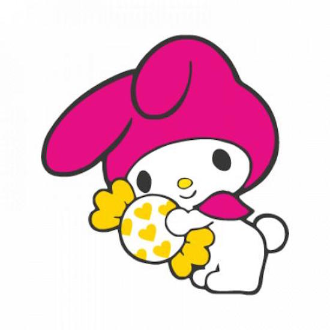
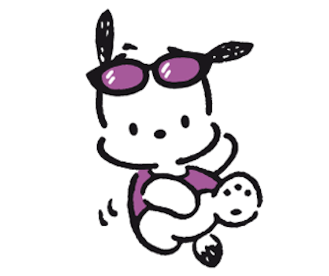
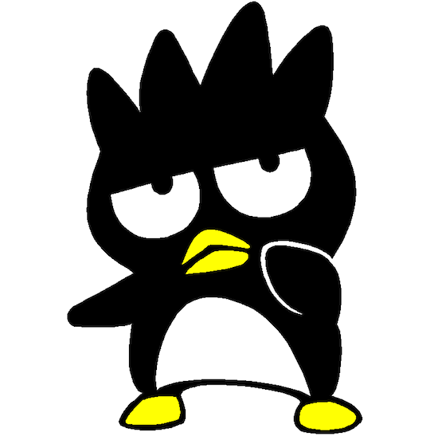
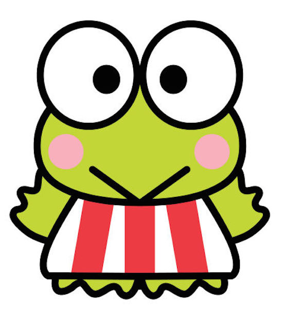
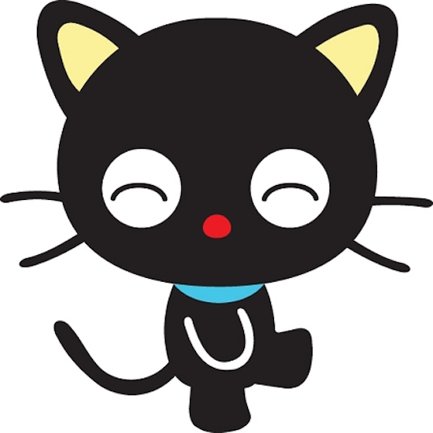

Hello Kitty
Birthday : November 1
As tall as five apples, and as heavy as three, Hello Kitty is a bright little girl with a heart of gold. She loves to bake cookies and play the piano, and dreams of one day becoming a pianist or maybe even a poet. She has a gift for music and English, and a soft spot for Mama's apple pie. Hello Kitty and her twin sister Mimmy are the best of friends.
My Melody
Birthday : January 18
My Melody is very honest and good-natured. She loves her younger brother Rhythm dearly, and treasures the adorable hood that her grandma made especially for her. Her favorite hobby is baking cookies with her mother, and her favorite food is almond pound cake.
Pochacco
Birthday : February 29
Pochacco is a curious and clumsy little guy who sometimes sticks his nose where it isn't wanted. He loves going for walks and eating banana ice cream, and lives in Ugulsu Alley just outside of Fuwafuwa Town. He is as tall as four cups of his favorite banana ice cream, and weighs as much as three carrots from the Fuwafuwa Town carrot patch.
Badtz-Maru
Birthday : April 1
Badtz-Maru is one mischievous little penguin. He lives with his mother and pinball playing father in Gorgeoustown. Badtz-Maru attracts lots of attention as he walks his pet alligator, Pochi. Badtz-Maru has dreams of greatness when he grows up, but for now he rolls his eyes at his humorous life in Gorgeoustown.
Keroppi
Birthday : July 10
Keroppi lives with his brother, sister, and parents in a big house on the edge of Donut Pond, the largest and bluest pond around. Keroppi's friends share his love of playing games, especially baseball and boomerangs. But most often he is seen with his little snail friend, Den Den, always tagging along and usually a little behind.
Chococat
Birthday : May 10
Although this little boy cat tends to be a little scatterbrained at times, he's always up on the latest news, thanks to his ultrasensitive 'antenna' whiskers! Taking his name from his chocolate-colored nose, Chococat has fun playing around his house (the 'Choco-choco House') with his friends Cookie-Bau the dog, Nutz the hamster, Jellybean the bunny, and the Duckies.